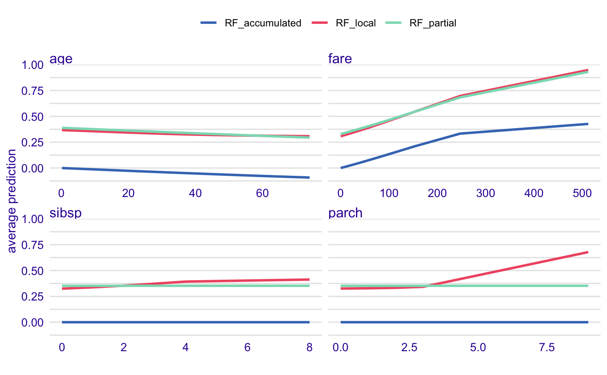
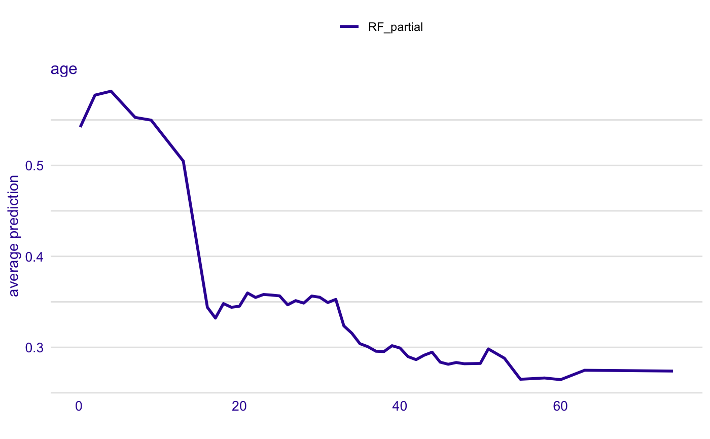
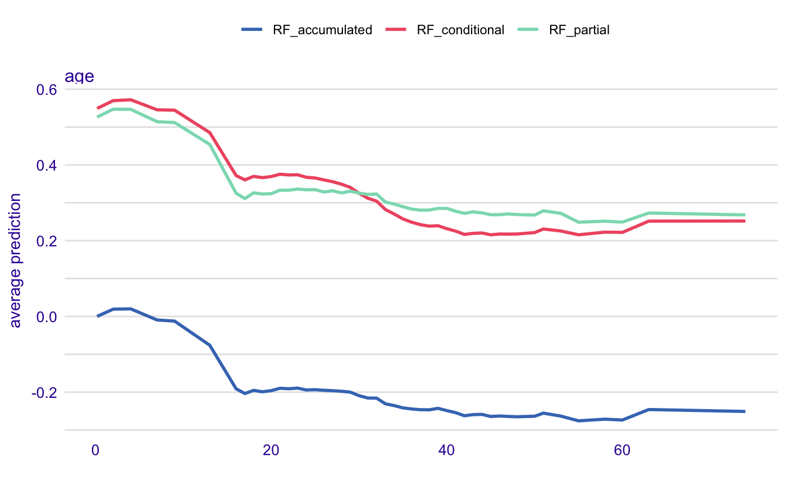
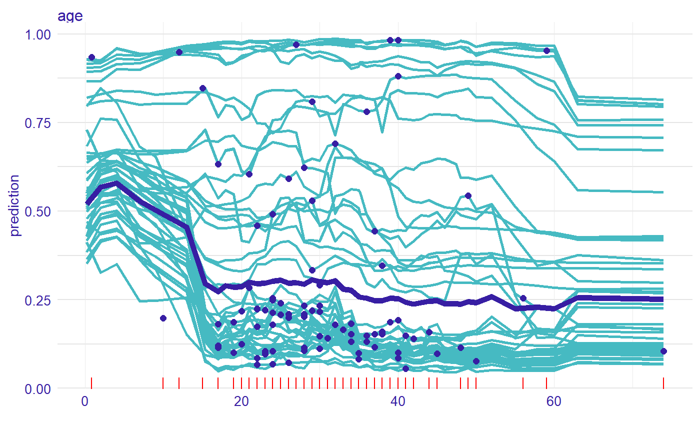

Plots Aggregated Profiles
Function 'plot.aggregated_profiles_explainer' creates a 'ggplot2' plot with partial dependency plot or accumulated effect plot. It works in a similar way to 'plot.ceteris_paribus', but instead of individual profiles show average profiles for each variable listed in the 'variables' vector.
# S3 method for aggregated_profiles_explainer plot(x, ..., size = 1, alpha = 1, color = "_label_", facet_ncol = NULL, variables = NULL)
Arguments
| x | a ceteris paribus explainer produced with function `aggregate_profiles()` |
|---|---|
| ... | other explainers that shall be plotted together |
| size | a numeric. Size of lines to be plotted |
| alpha | a numeric between 0 and 1. Opacity of lines |
| color | a character. Either name of a color or name of a variable that should be used for coloring |
| facet_ncol | number of columns for the `facet_wrap()` |
| variables | if not NULL then only `variables` will be presented |
Value
a ggplot2 object
References
Predictive Models: Visual Exploration, Explanation and Debugging https://pbiecek.github.io/PM_VEE
Examples
library("DALEX") # Toy example titanic <- na.omit(titanic) model_titanic_glm <- glm(survived == "yes" ~ gender + age + fare, data = titanic, family = "binomial") explain_titanic_glm <- explain(model_titanic_glm, data = titanic[,-9], y = titanic$survived == "yes")#> Preparation of a new explainer is initiated #> -> model label : lm (default) #> -> data : 2099 rows 8 cols #> -> target variable : 2099 values #> -> predict function : yhat.glm will be used (default) #> -> predicted values : numerical, min = 0.1483104 , mean = 0.3244402 , max = 0.9822194 #> -> residual function : difference between y and yhat (default) #> -> residuals : numerical, min = -0.8840083 , mean = 1.110794e-14 , max = 0.8437859 #> A new explainer has been created!pdp_rf_p <- partial_dependency(explain_titanic_glm, N = 50) pdp_rf_p$`_label_` <- "RF_partial" pdp_rf_l <- conditional_dependency(explain_titanic_glm, N = 50) pdp_rf_l$`_label_` <- "RF_local" pdp_rf_a<- accumulated_dependency(explain_titanic_glm, N = 50) pdp_rf_a$`_label_` <- "RF_accumulated" head(pdp_rf_p)#> _vname_ _label_ _x_ _yhat_ _ids_ #> 1 fare RF_partial 0.0000000 0.3010178 0 #> 2 sibsp RF_partial 0.0000000 0.3264993 0 #> 3 parch RF_partial 0.0000000 0.3264993 0 #> 4 age RF_partial 0.1666667 0.3722832 0 #> 5 parch RF_partial 0.2800000 0.3264993 0 #> 6 sibsp RF_partial 1.0000000 0.3264993 0library("randomForest") titanic <- na.omit(titanic) model_titanic_rf <- randomForest(survived == "yes" ~ gender + age + class + embarked + fare + sibsp + parch, data = titanic)#> Warning: The response has five or fewer unique values. Are you sure you want to do regression?model_titanic_rf#> #> Call: #> randomForest(formula = survived == "yes" ~ gender + age + class + embarked + fare + sibsp + parch, data = titanic) #> Type of random forest: regression #> Number of trees: 500 #> No. of variables tried at each split: 2 #> #> Mean of squared residuals: 0.1428464 #> % Var explained: 34.83explain_titanic_rf <- explain(model_titanic_rf, data = titanic[,-9], y = titanic$survived == "yes", label = "Random Forest v7")#> Preparation of a new explainer is initiated #> -> model label : Random Forest v7 #> -> data : 2099 rows 8 cols #> -> target variable : 2099 values #> -> predict function : yhat.randomForest will be used (default) #> -> predicted values : numerical, min = 0.01136359 , mean = 0.3249424 , max = 0.9960445 #> -> residual function : difference between y and yhat (default) #> -> residuals : numerical, min = -0.7947626 , mean = -0.0005022124 , max = 0.9079968 #> A new explainer has been created!selected_passangers <- select_sample(titanic, n = 100) cp_rf <- ceteris_paribus(explain_titanic_rf, selected_passangers) cp_rf#> Top profiles : #> gender age class embarked country fare sibsp parch #> 557 male 50 2nd Southampton England 13.0000 0 0 #> 557.1 female 50 2nd Southampton England 13.0000 0 0 #> 660 male 25 3rd Cherbourg Lebanon 14.0901 1 0 #> 660.1 female 25 3rd Cherbourg Lebanon 14.0901 1 0 #> 1535 male 20 restaurant staff Southampton England 0.0000 0 0 #> 1535.1 female 20 restaurant staff Southampton England 0.0000 0 0 #> _yhat_ _vname_ _ids_ _label_ #> 557 0.07949328 gender 557 Random Forest v7 #> 557.1 0.82939443 gender 557 Random Forest v7 #> 660 0.14154624 gender 660 Random Forest v7 #> 660.1 0.52129152 gender 660 Random Forest v7 #> 1535 0.06409540 gender 1535 Random Forest v7 #> 1535.1 0.74295222 gender 1535 Random Forest v7 #> #> #> Top observations: #> gender age class embarked country fare sibsp parch #> 557 male 50 2nd Southampton England 13.0000 0 0 #> 660 male 25 3rd Cherbourg Lebanon 14.0901 1 0 #> 1535 male 20 restaurant staff Southampton England 0.0000 0 0 #> 942 female 59 2nd Southampton United States 26.0000 0 1 #> 491 male 30 2nd Southampton England 13.0000 0 0 #> 1639 male 47 victualling crew Southampton England 0.0000 0 0 #> _yhat_ _label_ _ids_ #> 557 0.07949328 Random Forest v7 1 #> 660 0.14154624 Random Forest v7 2 #> 1535 0.06409540 Random Forest v7 3 #> 942 0.84896959 Random Forest v7 4 #> 491 0.11328539 Random Forest v7 5 #> 1639 0.14670743 Random Forest v7 6pdp_rf_p <- aggregate_profiles(cp_rf, variables = "age", type = "partial") pdp_rf_p$`_label_` <- "RF_partial" pdp_rf_c <- aggregate_profiles(cp_rf, variables = "age", type = "conditional") pdp_rf_c$`_label_` <- "RF_conditional" pdp_rf_a <- aggregate_profiles(cp_rf, variables = "age", type = "accumulated") pdp_rf_a$`_label_` <- "RF_accumulated" head(pdp_rf_p)#> _vname_ _label_ _x_ _yhat_ _ids_ #> 1 age RF_partial 0.1666667 0.5406741 0 #> 2 age RF_partial 2.0000000 0.5543096 0 #> 3 age RF_partial 4.0000000 0.5553149 0 #> 4 age RF_partial 7.0000000 0.5271815 0 #> 5 age RF_partial 9.0000000 0.5297827 0 #> 6 age RF_partial 13.0000000 0.4652562 0plot(pdp_rf_p)plot(cp_rf, variables = "age") + show_observations(cp_rf, variables = "age") + show_rugs(cp_rf, variables = "age", color = "red") + show_aggregated_profiles(pdp_rf_p, size = 2)